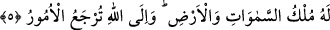
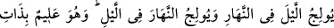

5. Göklerin ve yerin mülkü O’nundur. Bütün işler ancak O’na döndürülür.
“Göklerin ve yerin mülkü O’nundur.” Sûrenin ikinci âyetinde de geçen bu cümle
mânâyı pekiştirmek ve bundan sonra gelmekte olan âyete girizgâh olmak üzere
tekrarlanmıştır. “Bütün işler ancak O’na döndürülür.” Âyette dönüş fiili mef’ûl
kalıbında gelmiştir, ama fâil kalıbında da okunabilir. Bu durumda mânâ şöyledir: Bütün
işler ister tek başına ister toplu halde yapılmış olsun, sadece Allah Teâlâ’ya
döndürülür, başkasına değil. Öyleyse O’nun huzuruna çıkmak için O’nun nezdinde en
isâbetlisini ve en güzelini seçerek hazırlanın.
Kelâmın tekrârının birinci sebebi varlığa çıkarma (ibdâ), ikincisi ise mahlûkun
kendisine döndürülmesidir (iâde).
Bu sebepledir ki, sûrenin ikinci âyetinde “O, diriltir, öldürür” ifâdesi; bu âyette ise
âhirette bütün yaratılmışların O’na döndürüleceği ve O’nun onları durumlarına göre
cezâlandıracağı veya mükâfâtlandıracağı ifâdeleri; beraber zikredilmiştir. Yine bu
âyette rûhânî göklerin ilimlerinin hükümranlığının O’na âid olduğuna işâret vardır. Bu
ilimler de, Vehhab ism-i şerîfi mûcibince Allah tarafından samîmî kullarına feyiz
yoluyla bahşedilen ve kulların hiç bir çaba harcamadan mazhar kılındıkları keşfî ve
ledünnî ilimlerdir. Yine âyette yeryüzüne âid şeklî kazanılmış (kesbî) ilimlerin
hükümranlığının da O’na âid olduğuna işâret vardır. Bu ilimler de, âlimlerin cehd,
gayret ve çalışmaları sâyesinde, onların bu gayretlerine bağlı feyiz yoluyla elde
edilebilmektedir. Bu sebeple gerek keşfî ilimler, gerekse kesbî ilimler, Allah’ın ezelî ve
ebedî inâyetine râcîdir.
6. Geceyi gündüze katar, gündüzü de geceye katar. O, kalplerde olanı bilir.
“Geceyi gündüze katar,” Îlâc kelimesi katmak, koymak mânâsına gelir. Yâni gecenin
vaktinden gündüze ekler. Böylece gündüz olabildiği kadar en uzun hâliyle onbeş saat,
gecede en kısa hâliyle dokuz saat olur.
“…gündüzü de geceye katar” Yâni gündüzün zamanından da geceye ekler. Güneşin
doğup battığı noktaların değişmesine uygun olarak mevsimlerin değişmesiyle gece en
uzun hâliyle onbeş saat, gündüz de en kısa hâliyle dokuz saat olur. Gece gündüz her
zaman toplam olarak yirmi dört saattir. Fethu’r-Rahmân adlı eserde şöyle denilmiştir:
Gece ile gündüzün uzayıp kısalmasındaki ibrete dikkat çekilmektedir. Bu durum